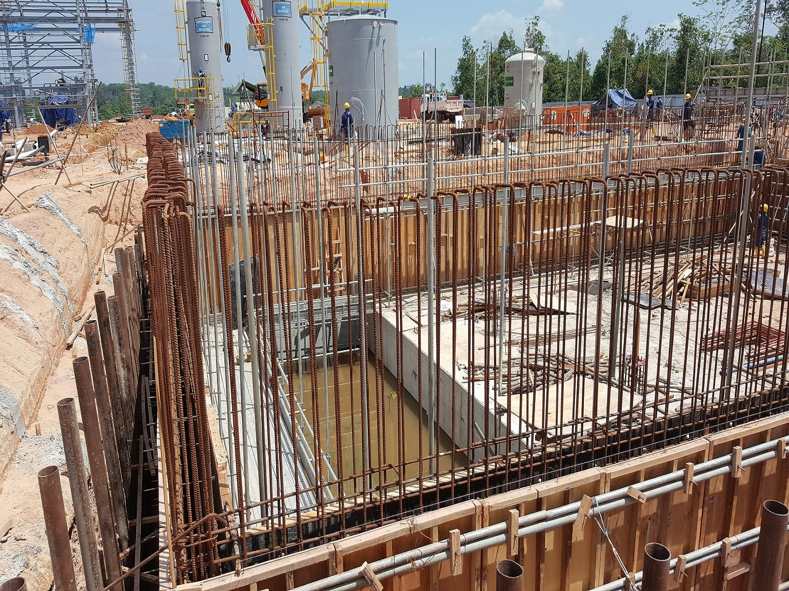
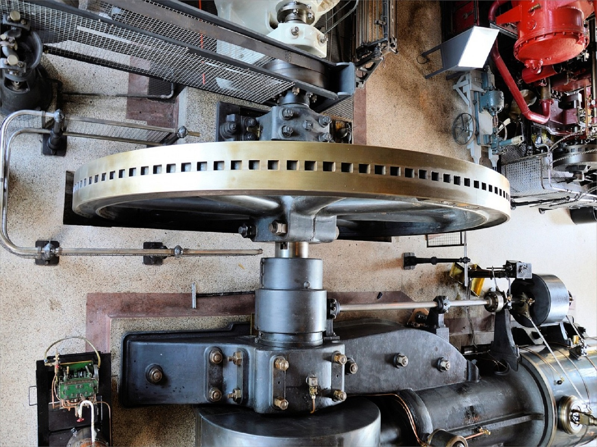

Polytechnic - Diploma
Polytechnic education in India is growing at an immense rate with students opting for vocational courses. They provide several opportunities for students to be employable in different fields. Polytechnic courses are more career-based and students can pursue these right after completing their 10th.
These are offer 2 and 3-year diploma.
Polytechnic is a technical course which is a diploma in Engineering course.
This is a very popular course which can be done after passing 10th or 12th. After this you become a Junior Engineer and can apply for the post of Junior Engineer and can also Loco Pilot, Technical Assistant and apply for many government posts.
It is recognized as equivalent to Intermediate.
If you go to do B.tech then you get admission directly in the second year.
When you go for engineering after doing diploma then it is very easy for you and there is a right way to succeed in the field of engineering.
List of Polytechnic Courses
Electrical Engineering

Diploma Electrical Engineering course basically deals with the power used for lighting, heating, cooling, refrigeration and operating home appliances, control systems, electronics, and signal processing.
Electrical Engineering is a branch of engineering that studies about the production and uses of Electric power, its generation and distribution and the control of machines.
The study and application of electricity, electromagnetism, and electronics to process information and transmit energy is known as electrical engineering.
The Diploma in Electrical Engineering course mainly focuses on electrical elements and devices which are used to generate electricity from different methods such as Windmills, Nuclear power plants.
Civil Engineering

Civil Engineering course deals basically with the design and development of transportation systems, buildings, bridges, highways, flyovers etc.
Civil Engineering nowadays also widely traces its roots well within the public sector from municipalities to government offices, as well as the private sector, ranging from builders to homeowners.
Some best fields in civil engineering like Geotechnical engineer. Environmental engineer. Marine engineer Engineering manager. Design engineer. Water resource engineer. Civil engineer.
Computer Science and Engineering
Computer Science and Engineering (CSE) is the most sought-after specialization of engineering.
CSE engages the study of both Computer Hardware and Softwares.
The course is opted by most of the students who want to pursue their career as a Software Engineer or Developer or many other roles in the Computer Science field.
B.Tech in Computer Science and Engineering includes very interesting topics revolving around Computer Programming and Networking. Topics are majorly connected to algorithms, computation, programming languages, program design, computer hardware, computer software, etc. It is a comprehensive course in computer systems and applications
Mechanical Engineering

Mechanical engineering is a branch of engineering which work to design, develop, build, and test all sorts of mechanical devices, tools, engines and machines.
Mechanical Engineering concerned with designing, producing and operating machinery, ranging from ranging from relatively simple items to more complex machinery and even entire facilities and plants.
The scope of mechanical engineering is vast even today.
Mechanical engineers are being welcomed in various industries with open arms and high compensation packages, provided that the candidates are skilled and proficient.
Electronics & Communication

There are various jobs in the market for electronics and communication engineering which are of high demand and various industries are looking for ECE engineers who can assist them in latest technologies.
A degree in electronics and communication is good for the student it is one of the demanded branch in engineering.
Both CSE and ECE are equivalently good sector.
Electronics engineers can join IT industry, airlines, telecommunication, Heavy electricals limited (BHEL), Electronics corporation of India limited(ECIL), National thermal Power corporation (NTPC), WIPRO, HCL, ISRO etc.
Information Technology

Information Technology engineering is one of the most sought-after branches of Engineering, with this field being highly in demand and prestigious in the IT industry.
Information Technology field utilizes computers, networks, storage, and other technological infrastructure, both software & hardware, to deal with and use information/data.
A qualified IT engineer has the option to choose his or her work in fields like ITs, electronic gadgets, navigation systems, research labs, finance companies, media companies, etc.